![in first picture of figure 6.8 in third shape 3 squares in horizontal and 1 in vertical in second picture 2 rows of square in which 2 squares in the first row in which 1 square in the first column and 1 square in the second column and 2 rows of square in which 2 squares in the second row in which 1 square in the second column and 1 square in the third column in the third picture, 2 columns of square in in which 1 square in the second row of first column and 1 square in the third row of first column and 2 squares in the second column in which 1 square in the first row of second column and 1 square in the second row second column in fourth picture, rotating the third shape will be placing 3 rows in a vertical and among two rows one in middle facing left in the fifth picture, 3 squares in the first upper row and 1 square in the middle of the second row facing the ground.like T Shape](images/image-356.png)
1. 4
2.
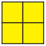
3.
4.
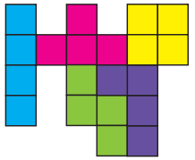
5.
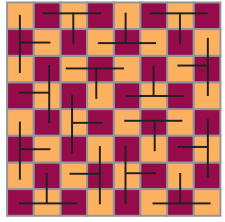
(more possible ways)
6.
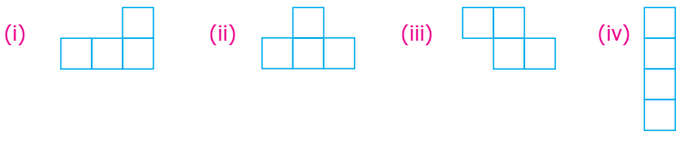
7.
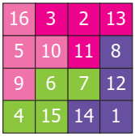
(more possible ways)
1.
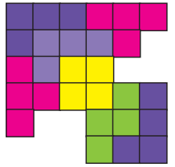
2.
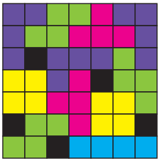
(more possible ways)
3.
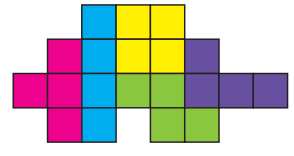
4.
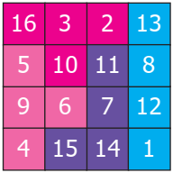
(more possible ways)
5. Mandapam to Krusadai Island to Vivekanandar Memorial Hall
Challenge problems
6.
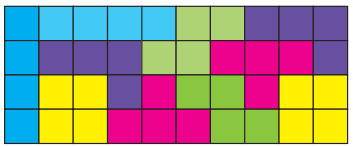
(more possible ways)
7.
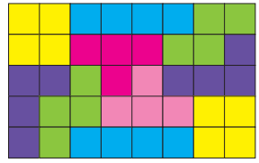
(more possible ways)
8.
1) route 1 ye to G to D
route 2 ye to B to D
route 3 ye to B to C to D
route 4 ye to G to F to E to D
2) 320 metre
3) route 1 B to ye to G to F
250+100+150 equal to 600 metre
route 2 B to D to E to F
100+120+300 equal to 520 metre
route 3 B to D to G to F
100+200+150 equal to450 metre
route 4 B to C to D to E to F
120+200+120+300 equal to740 metre
Route 3 is the shortest route
Glossary
Additive Identity |
கூட்டல் சமனி |
Additive Inverse |
கூட்டல் எதிர்மறை |
Adjacent angle |
அடுத்துள்ள கோணங்கள் |
Adjacent sides |
அடுத்துள்ள பக்கங்கள் |
Alternate exterior angle |
ஒன்றுவிட்ட வெளி கோணங்கள் |
Alternate interior angle |
ஒன்றுவிட்ட உட்கோணங்கள் |
Alternate |
ஒன்றுவிட்ட |
Angle bisector |
கோண இருசமவெட்டி |
Associative Property |
சேர்ப்புப்பண்பு |
Base |
அடிப்பக்கம் |
Closure property |
அடைவு பண்பு |
Co-efficient |
கெழு |
Commutative property |
பரிமாற்றுப் பண்பு |
Compare |
ஒப்பீடு |
Constant |
மாறிலி |
Corresponding angles |
ஒத்த கோணங்கள் |
Diagonal |
மூலைவிட்டம் |
Distributive property |
பங்கீட்டுப் பண்பு |
Equation |
சமன்பாடு |
Formation |
உருவாக்குதல் |
Generalize |
பொதுமைப்படுத்து |
Height |
உயரம் |
Horizontal |
கிடைமட்டம் |
Integers |
முழுக்கள் |
Interior of an angle |
கோணத்தின் உட்பகுதி |
Isosceles trapezium |
இருசமபக்க சரிவகம் |
Like terms |
ஒத்த உறுப்புகள் |
Linear equations |
நேரியச் சமன்பாடுகள் |
Linear pair of angle |
நேரிய கோண இணைகள் |
Multiplicative Identity |
பெருக்கல் சமனி |
Negative Integers |
குறை முழுக்கள் |
Non-adjacent angle |
அடுத்தடுத்தமையாக் கோணங்கள் |
Numerical value |
எண் மதிப்பு |
Numerical co-efficient |
எண் கெழு |
Parallel sides |
இணை பக்கங்கள் |
Parallelogram |
இணைகரம் |
Pattern |
அமைப்பு |
Perpendicular |
செங்குத்து |
Perpendicular bisector |
செங்குத்துச் சமவெட்டி |
Positive integers |
மிகை முழுக்கள் |
Properties |
பண்புகள் |
Puzzle |
புதிர் |
Recall |
நினைவுகூர்தல் |
Regulation |
ஒழுங்குமுறை |
Rhombus |
சாய்சதுரம் |
Sequence |
தொடர்வரிசை |
Showcase |
காட்சிப்பேழை |
Substitution |
பிரதியிடுதல் |
Terms |
உறுப்புகள் |
Tetromino |
நான்கு சதுரங்கள் இணைக்கப்பட்ட வடிவம் |
Tokens |
வில்லைகள் |
Traffic |
போக்குவரத்து |
Transversal |
குறுக்குவெட்டி |
Trapezium |
சரிவகம் |
Undefined |
வரையறுக்கபடாதது |
Unlike terms |
ஒவ்வா உறுப்புகள் |
Variable |
மாறி |
Vertex |
முனை (அல்லது) உச்சி |
Vertically |
செங்குத்தாக |
Vertically opposite angles |
குத்தெதிர் கோணங்கள் |
Secondary Mathematics Class 7
Text Book Development Team
Reviewer
Dr. R. Ramanujam,
Professor
Institute of Mathematical Sciences, Taramani, Chennai.
Domain Expert
Dr. C. Annal Deva Priyadarshini,
Assistance Professor, Department of Mathematics,
Madras Christian College, Chennai.
Academic Coordinator
B. Tamilselvi,
Deputy Director,
State Council of Educational Research and Training, Chennai.
Group Incharge
Dr. V. Ramaprapha,
Senior Lecturer,
District Institute of Education and Training, Thirur,
Tiruvallur District.
Coordinator
D. Joshua Edison,
Lecturer,
District Institute of Education and Training, Thirur,
Kaliyampoondi, Kanchipuram District.
Content Writer
G.P. Senthilkumar,
B.T. Assistant,
Government High School, Eravankadu,
Vellore District.
M.J. Shanthi,
B.T. Assistant,
Panchayat Union Middle School, Kannankurichi,
Salem District.
M. Palaniyappan,
B.T. Assistant,
Sathappa Government Higher Secondary School,
Nerkuppai, Sivagangai District.
A.K.T. Santhamoorthy,
B.T. Assistant,
Government Higher Secondary School,
Kolakkudi, Tiruvannamalai District.
P. Malarvili,
B.T. Assistant,
Chennai High School, Pattalam,
Chennai.
M. Selvi,
B.T. Assistant,
J.G.G. Government Higher Secondary School,
Thiruvottiyur,
Chennai.
Content Readers
Dr. P. Jeyaraman,
Assistant Professor,
L.N. Government Arts College,
Ponneri – 601 204.
Dr. K. Kavitha,
Assistant Professor,
Bharathi Women’s College, Chennai.
Content Reader’s Coordinator
S. Vijayalakshimi,
B.T. Assistant,
Government Higher Secondary School,
Koovathur, Kanchipuram District.
ICT Coordinator
D. Vasuraj,
PGT & HOD, Department of Mathematics,
KRM Public School, Chennai.
QR Code Management Team
J.F. Paul Edwin Roy,
B.T. Assistant,
Panchayat Union Middle School, Rakkipatty,
Veerapandi, Salem.
S. Albert Valavan Babu,
B.T. Assistant,
Government High School, Perumal Kovil,
Paramakudi, Ramanathapuram.
M. Saravanan,
B.T. Assistant,
Government Girls Higher Secondary School,
Puthupalayam, Valapadi, Salam.
Art and Design Team
Layout Artist
Joy Graphics, Chintadripet, Chennai – zero two.
Raj Graphics, Theni District.
Typist
R. Yogamalini,
Artist
Prabhu Raj D.T.M
Government High School,
Manimangalam, Kanchipuram District.
In House QC
Prasanth C
Arun Kamaraj P
Jerald Wilson
Stephen